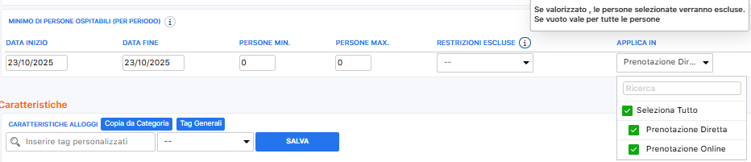
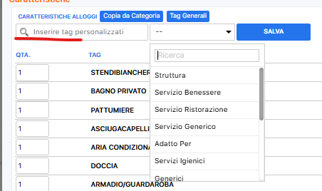
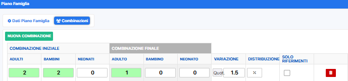
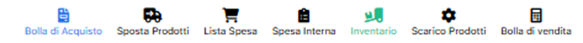
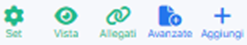
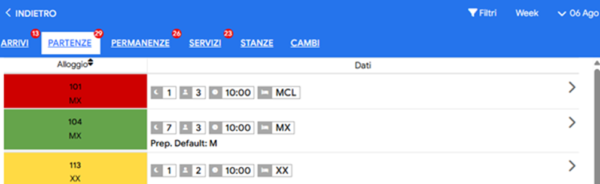
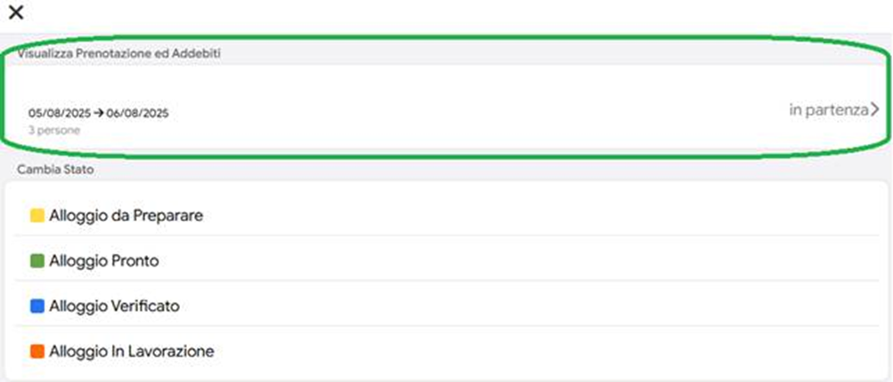
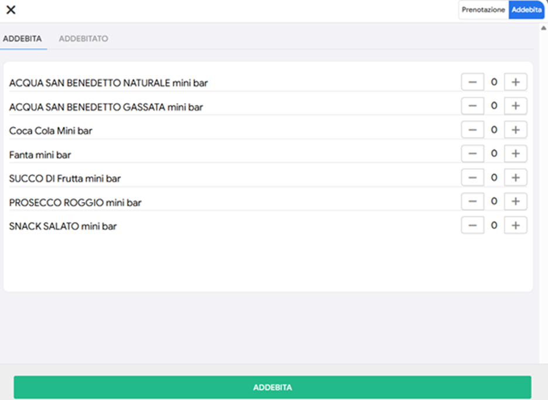
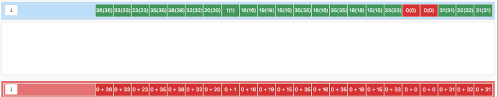

ALLOGGI
In questa pagina andremo a vedere come impostare tutte le specifiche informazioni delle Categorie di Alloggi e/o Alloggi Specifici.
è IMPOSTAZIONI
è ALLOGGI
PERSONALIZZA CATEGORIA
NOME → Inserire il Nome della Categoria.
NOME INTERNO CORTO→ Inserire il Nome della Categoria che dovrà comparire all'interno del calendario ( volendo si può inserire un testo più corto / abbreviato )
CAPACITÀ → Selezionare il numero massimo di capienza della Categoria.
PERSONE AGGIUNTIVE → Selezionare le eventuali persone aggiuntive indicando anche la tipologia.
DIMENSIONE STANZA → Inserire i MQ.
DISPOSIZIONE LETTI
CATEGORIA → Indicare tutte le possibili combinazioni di
letti che sono possibili fare nella Categoria.
( è possibile
aggiungere ulteriori combinazioni di letti da Impostazioni →
Generali → Elenco Letti )
DISPOSIZIONE LETTI DEFAULT → Indicare la disposizione dei letti che dovrà prendere il gestionale in automatico nel caso in cui non venisse indicata nessuna combinazione all'interno della prenotazione.
COLORE BANDA → Selezionare il colore che si desidera associare a quella Categoria.
ANIMALI AMMESSI → Indicare se nella categoria sono ammessi animali e, nel caso la quantità massima per alloggio.
DESCRIZIONE → Inserire la descrizione della Categoria.
FOTO → Inserire foto, video o Virtual tour della Categoria.
NUMERO DI PERSONE
OSPITABILI (PER PERIODO) → Si usa questa sezione se
vogliamo usare, in un determinato intervallo di tempo, questa
categoria per un determinato numero di persone che non eccede il
numero max inserito nella capacità.

CARATTERISTICHE
ALLOGGI
1) Cliccare sul tasto Tag Generali e
selezionare tutte le voci di interesse della singola categoria.
2)
Qualora non fosse presente la caratteristica, basta scrivere
direttamente il nome della caratteristica nel campo “Inserire tag
personalizzato”, associarlo alla categoria e cliccare su
Salva.

IMPOSTAZIONE ALLOGGIO SPECIFICO
Cliccare sulla matitina in corrispondenza del numero dell'alloggio ed indicare se l'alloggio è PRENOTABILE, cioè visibile on-line al momento del collegamento dei vari portali ed è possibile creare dei preventivi oppure valido solo lato amministratore l'alloggio sarà gestito. esclusivamente dalla struttura.
Modificare qualsiasi altro dato
nello specifico alloggio solo esclusivamente se il dato è diverso
da quello impostato nella categoria.
ORDINAZIONE CATEGORIE E ALLOGGI
Cliccare su SET ORDINE in alto per ordinare alfabeticamente o numericamente gli alloggi e le categorie o, in alternative, è possibile spostare nell'ordine che si preferisce.
N.B. nel caso in la struttura avesse bisogno di aggiungere CATEGORIE e/o ALLOGGI dovrà contattare l'Assistenza Scidoo.
VISTA ALLOGGI TABELLARE
La Vista Alloggi Tabellare mostra tutti gli alloggi in ordine numerico, in un’unica schermata riassuntiva e consente di modificare rapidamente le principali informazioni di ciascun alloggio senza entrare nelle schede singole.
è IMPOSTAZIONI
è VISTA ALLOGGI TABELLARE
ALLOGGIO → Si può modificare il Nome dell'alloggio.
CATEGORIA → Si può andare a modificare tutta la Categoria cliccando sulla matitina.
STATO → Si può definire se prenotabile o valido solo lato amministratore.
CAPIENZA → Si va a definire il numero massimo di capienza.
CAPIENZA EXTRA → Si va a definire le persone aggiuntive oltre alla capienza.
PERSONE AGGIUNTIVE → Selezionare la tipologia di persone aggiuntive.
PIANO → Selezionare il piano dell'alloggio.
CODICE CIN → Inserire il codice CIN unico dell'alloggio.
GENERALI
In questa pagina andremo a vedere come impostare l'anagrafica fisica della struttura e le varie impostazioni base della struttura.
è IMPOSTAZIONI
è GENERALI
DATI AZIENDA
Si
inseriranno i dati necessari per compilare l'anagrafica fisica della
struttura
NOME STRUTTURA → Inserire il nome della struttura.
TELEFONO → Inserire il numero di telefono principale della struttura.
EMAIL → Inserire l'indirizzo e-mail principale della struttura.
SITO WEB → Inserire il sito della struttura.
GOOGLE MAPS → Cliccare sul pulsante GOOGLE MAPS e seguire le istruzioni per inserire la mappa per le indicazioni.
LOGO → Cliccare sul pulsante + FOTO per caricare la foto del logo.
ORARI → Inserire le fasce orario del check-in e del check-out.
CODICE IDENTIFICATIVO NAZIONALE → Inserire il CIN.
CODICE IDENTIFICATIVO REGIONALE → Inserire il CIR.
+ SOCIAL
SOCIAL → Selezionare dal menù a tendina il social interessato.
LINK → Copiare nella casella il link alla vostra pagina del social interessato.
FASCE ETÀ CLIENTI
Creare tutte le fasce di età necessarie alla composizione del listino, facendo attenzione ad indicare l'età minima compresa e l'età massimo non compresa.
ELENCO PIANI →
Cliccare su NUOVO PIANO per creare i vari piani degli alloggi inserendo, se si desidera, anche un colore diverso per ogni piano.
ELENCO LETTI
NUOVA TIPOLOGIA
LETTO
cliccando qui si va a creare una riga
aggiuntiva
LETTO → Inserire il NOME del letto.
N. PERSONE → Inserire il numero di persone che può ospitare il letto.
CODICE → Assegnare un codice al letto.
+ COMBINAZIONE
Indicare tutte le possibili combinazioni di letti presenti all'interno della struttura, ricordando che ad ogni riga corrisponde una combinazione.
INFORMAZIONE
STRUTTURA
Inserire tutte le informazioni sulla
struttura che si vogliono dare al cliente in fase di preventivo
NUOVA INFORMAZIONE
STRUTTURE → In caso di Multi Struttura, sarà possibile indicare se una specifica informazione sarà visibile solo per una struttura.
MODIFICA
TITOLO → Inserire il TITOLO dell'Informazione.
MODIFICA INFORMAZIONE → Inserire la descrizione dell'informazione.
PERIODI DI VISUALIZZAZIONE → Se necessario è possibile indicare se una specifica informazione deve essere visibile solo in un determinato periodo.
Nella Galleria Foto possiamo creare più album fotografici della struttura.
è IMPOSTAZIONI
è GALLERIA FOTO
+ NUOVO ALBUM
TITOLO → Inserire un Titolo che vada a definire il contenuto dell'album.
STRUTTURA → In caso di Multi Struttura indicare la Struttura di riferimento.
USO INTERNO → Flaggare la casella nel caso si voglia la visibilità dell'album solo ad uso interno della struttura.
IMPOSTAZIONI
TITOLO → Nel caso non sia stato inserito precedentemente, inserirlo adesso.
DESCRIZIONE → Inserire una Descrizione dell'Album.
+ FOTO → Aggiungere le foto cliccando su tale pulsante.
In questa pagina andremo a vedere come creare nuovi utenti ed assegnare ad ogni Permesso delle specifiche operatività.
è IMPOSTAZIONI
è PERSONALE
CREARE UN NUOVO UTENTE
Cliccare sul +.
Inserire il NOME dell'utente.
Cliccare su CONFERMA.
Verranno generate le credenziali personali di accesso al gestionale (Sarà possibile modificare la password in un secondo momento).
Cliccare sul menù a tendina in corrispondenza della voce PERMESSI ed associare un PERMESSO all'utente.
CAMBIARE LE OPERATIVITÀ DEL PERSONALE
PERMESSI.
Cliccare sulla matitina in corrispondenza del permesso che si vuole modificare.
Attivare e/o Disattivare le varie voci.
COME IMPOSTARE IL PIN UTENTE
Cliccare sul nome dell'utente interessato.
Inserire il PIN nella casella del PIN CAMBIO UTENTE.
In questa pagina andremo a vedere come impostare e collegare i vari portali per la comunicazione della movimentazione degli ospiti.
è IMPOSTAZIONI
è ISTAT, IMPOSTA DI SOGGIORNO E ALLOGGIATI
ALLOGGIATI WEB
è + AGGIUNGI
SOFTWARE → Selezionare la voce ALLOGGIATI WEB XML.
ETICHETTA → Impostare un'etichetta nel caso siano necessarie più voci simili.
ALLOGGI → Collegare tutti gli alloggi inerenti a quella struttura.
IMPOSTAZIONI (ROTELLINA)
USER CLIENTE → Inserire il nome utente usato per accedere al portale.
PASSWORD CLIENTE → Inserire la password usata per accedere al portale.
WEB SERVICE KEY → Inserire la WEB SERVICE KEY presa dal portale.
Salvare il tutto cliccando su SALVA.
è COME RECUPERARE LA WEB SERVICE KEY DAL PORTALE
Entrare nel portale della Questura (Alloggiati Web).
Cliccare sull'icona del profilo (Omino) in alto a destra.
Cliccare su Web Service Key.
Cliccare su Genera Web Service Key.
Copiare la Web Service Key ed incollarla su Scidoo.
ISTAT
è + AGGIUNGI
SOFTWARE → Selezionare il portale di competenza in base alla propria Regione dal menù a tendina.
ETICHETTA → Impostare un'etichetta nel caso siano necessarie più voci simili.
ALLOGGI → Collegare tutti gli alloggi inerenti a quella struttura.
IMPOSTAZIONI (ROTELLINA)
Inserire i dati necessari. [Consultare l'apposita voce “Istat E Imposta Di Soggiorno” sul Manuale Scidoo].
Salvare il tutto cliccando su SALVA.
TASSA DI SOGGIORNO
è + AGGIUNGI
SOFTWARE → Selezionare la voce IMPOSTA DI SOGGIORNO NO SOFTWARE.
ETICHETTA → Impostare un'etichetta nel caso siano necessarie più voci simili.
ALLOGGI → Collegare tutti gli alloggi inerenti a quella struttura.
ICONCINA BLU (X)
+ ESENZIONE
REGOLA → Impostare il nome dell'esenzione.
CODICE → Non è obbligatorio impostare un codice.
TIPO ELABORAZIONE → Scegliere dal menù la voce più adatta al tipo di esenzione.
PREZZO → Impostare se il prezzo è diverso da 0.
MIN → Impostare il valore minimo a seconda del Tipo di Elaborazione scelto.
MAX → Impostare il valore massimo a seconda del Tipo di Elaborazione scelto.
RESIDENZA → Impostare il comune di Residenza qualora fosse richiesto.
PERIODO DI VALIDITÀ → Impostare un Periodo di Validità qualora la regola di esenzione abbia una validità limitata.
METODO DI
CALCOLO
Scegliere un metodo di calcolo della Tassa di
Soggiorno.
VALIDITÀ
A PARTIRE DA → Impostare la data di inizio Validità.
FINO A → Impostare la data di fine Validità.
NOTTI → Impostare il numero massimo di notte in cui si paga la Tassa di Soggiorno.
PREZZO → Impostare il prezzo giornaliero della Tassa di Soggiorno.
FISCALITÀ
In questa pagina andremo a vedere come impostare l'intestazione fiscale della struttura.
è IMPOSTAZIONI
è FISCALITÀ
IMPOSTAZIONI FATTURE
INTESTAZIONE →
Cliccare sui 3 puntini … per andare ad impostare l'Anagrafica
Fiscale della struttura.
Inserire il codice SDI
o CODICE UNIVOCO.
REGIME FISCALE → Selezionare il Regime Fiscale della Struttura.
SOFTWARE FATTURE
→ Selezionare il Software in possesso ed andare nella voce
Fiscalità E Fatturazione Elettronica nel manuale di Scidoo per
configurarlo.
Si consiglia vivamente di aprire un
ticket per prendere appuntamento e configurare insieme il Software.
STRUTTURE → In caso di Multi-strutture, selezionare la struttura o le strutture da associare a tale intestazione fiscale.
PRIVACY
In questa pagina andremo a vedere come inserire e personalizzare le varie voci di Privacy.
è IMPOSTAZIONI
è PRIVACY
PRIVACY POLICY
NUOVA PRIVACY
TITOLO e DIMINUTIVO → Entrambe le voci saranno personalizzabili tramite il pulsante Modifica.
PREVENTIVATORE → Apportare il Flag nella colonna Attiva nel caso la si voglia attivare per il Preventivatore e nella colonna Opzionale nel caso non lo si voglia rendere obbligatorio.
BOOKING ENGINE → Apportare il Flag nella colonna Attiva nel caso la si voglia attivare per il Booking Engine e nella colonna Opzionale nel caso non lo si voglia rendere obbligatorio.
MODULO CONTATTI →Apportare il Flag nella colonna Attiva nel caso la si voglia attivare per il Modulo Contatti e nella colonna Opzionale nel caso non lo si voglia rendere obbligatorio.
PRENOTAZIONE → Apportare il Flag nella colonna Attiva nel caso la si voglia attivare per le Prenotazioni e nella colonna Opzionale nel caso non lo si voglia rendere obbligatorio.
WEBAPP → Apportare il Flag nella colonna Attiva nel caso la si voglia attivare per la WebApp e nella colonna Opzionale nel caso non lo si voglia rendere obbligatorio.
LINK DOCUMENTO PRIVACY → Selezionare il documento che si vuole usare, se il documenti di default di Scidoo o un link esterno (link del sito personale della struttura).
LINK ESTERNO → Inserire qui il link esterno.
MODIFICA
STRUTTURE → Nel caso di Multi-Struttura, selezionare la struttura per la quale si vuole impostare tale Privacy.
DIMINUTIVO → Inserire un diminutivo, se necessario.
TITOLO → Inserire un Titolo.
DESCRIZIONE → Inserire la descrizione, cioè tutto il testo della privacy.
DOCUMENTI
In questa pagina andremo a vedere come creare i vari documenti/contratti che si vogliono far firmare agli ospiti.
è IMPOSTAZIONI
è DOCUMENTI
NUOVO DOCUMENTO
MODIFICA
TITOLO → Inserire il Titolo del Documento.
APPARTAMENTI → Selezionare le Categorie per i quali è valido il Documento.
SERVIZI → Selezionare la retta per cui è valido il Documento.
FORMATO PDF → Indicare il formato del foglio di stampa (A3-A4-A5).
TESTO → Nel riquadro a destr sarà
possibile inserire il Testo del Documento.
C'è
la possibilità di personalizzare il testo inserendo dei TAG.
I
TAG sono delle informazioni che prenderà il
gestionale in automatico in bare alla prenotazione in questione.
SERVIZI EXTRA
è IMPOSTAZIONI
è PREZZI E SERVIZI
GENERICO o PULIZIE (in base alla voce di addebito da creare).
+ NUOVA CARTELLA
SOTTOTIPOLOGIA → Inserire il Nome della Cartella.
IVA → Inserire il valore della percentuale dell'IVA, che sarà valida per tutti i servizi presenti nella cartella.
ID CODICE IVA → Nel caso ci sia un'IVA a 0 selezionare la regola di esenzione.
+ NUOVO SERVIZIO
Inserire
il Nome del servizio e cliccare su "Conferma".
INFORMAZIONI
NOME SINGOLARE ITALIANO → Qui c'è il nome inserito precedentemente. Può essere modificato.
PREZZO → Inserire il Prezzo del Servizio. (Solo nel caso non abbia un prezzo variabile a secondo del periodo).
BOOKING ENGINE → Attivando questa opzione il servizio sarà visibile e prenotabile sul Booking Engine.
NEGOZIO ONLINE → Attivando questa opzione il servizio sarà visibile e prenotabile sul Negozio Online.
WEBAPP → Attivando questa opzione il servizio sarà visibile e prenotabile sulla WebApp.
PRENOTABILITÀ
PRENOTABILE FINO A TOT. ORE PRIMA DALLA PRENOTAZIONE → Se impostato, il cliente potrà aggiungere questo servizio fino ad un massimo di ore prima dalla prenotazione.
CANCELLANILE FINO A TOT. ORE DAL SERVIZIO → Se impostato, il cliente potrà cancellare questo servizio fino ad un massimo di ore dall'inizio dello stesso.
SERVIZIO VALIDO SOLO PER CATEGORIE O ALLOGGI → Con questa voce possiamo andare a limitare il servizio unicamente a determinate Categorie.
SERVIZIO OBBLIGATORIO - AUTOINSERITO → Attivando questa opzione si imposta il servizio che si inserisce in automatico al momento della creazione della prenotazione.
VISUALIZZAZIONE PREZZO → Dal menù a tendina si può scegliere come far visualizzare il prezzo del servizio sul Booking Engine e sul Preventivo.
VISUALIZZA COME SERVIZIO AGGIUNTIVO → Se attivato sarà possibile selezionare il servizio al momento della creazione del preventivo. Nella finestra in cui si va a selezionare la tipologia e la quantità di ospiti.
REGOLE DI INSERIMENTO
(Non è Obbligatorio)
Qui si va ad impostare la
regola che determinerà l'inserimento del servizio all'interno
della prenotazione.
OGNI TOT DI NOTTI AD ALLOGGIO
OGNI → Qui si va a definire ogni quante notti deve essere inserito il servizio all'interno della prenotazione. (Esempio: Se imposto “2Notti”, il servizio sarà inserito la prima notte, la terza, la quinta, ecc..).
A PARTIRE DA → Selezionare il giorno dal quale si voglia far partire l'inserimento del servizio.
FINO AD → Selezionare il giorno dal quale il servizio non sarà più inserito all'interno della prenotazione.
N. MINIMO OBBLIGATORIO → Numero minimo di servizi aggiunti alla prenotazione.
N. MASSIMO OBBLIGATORIO → Numero massimo di servizi aggiunti alla prenotazione.
UNICO AD ALLOGGIO
INIZIO/FINE DEL SOGGIORNO → Selezionare se il servizio sarà inserito all'inizio del soggiorno, cioè il primo giorno, o alla fine del soggiorno, cioè l'ultimo giorno.
OGNI TOT DI NOTTI A PERSONA
OGNI → Qui si va a definire ogni quante notti deve essere inserito il servizio all'interno della prenotazione. (Esempio: Se imposto “2Notti”, il servizio sarà inserito la prima notte, la terza, la quinta, ecc..).
A PARTIRE DA → Selezionare il giorno dal quale si voglia far partire l'inserimento del servizio.
FINO AD → Selezionare il giorno dal quale il servizio non sarà più inserito all'interno della prenotazione.
N. MINIMO OBBLIGATORIO → Numero minimo di servizi aggiunti alla prenotazione.
N. MASSIMO OBBLIGATORIO → Numero massimo di servizi aggiunti alla prenotazione.
PERSONE MIN → Numero di persone minime a cui verrà aggiunto il servizio.
PERSONE MAX → Numero di persone massime a cui verrà aggiunto il servizio.
UNICO A PERSONA
INIZIO/FINE DEL SOGGIORNO → Selezionare se il servizio sarà inserito all'inizio del soggiorno, cioè il primo giorno, o alla fine del soggiorno, cioè l'ultimo giorno.
PERSONE MIN → Numero di persone minime a cui verrà aggiunto il servizio.
PERSONE MAX → Numero di persone massime a cui verrà aggiunto il servizio.
AVANZATE
NASCONDI CONTO PREZZO ZERO → Se il flag è attivo, questo servizio non verrà mostrato sul conto se il prezzo non è a Zero.
NASCONDI QUANTITÀ → Se il flag è attivo, verrà nascosta la quantità del servizio.
NASCONDI ETICHETTA TIPOLOGIA → Se il flag è attivo, nel negozio online l'etichetta “a persona” verrà nascosta per questo servizio.
EVIDENZA (XML) → Se attivo, questo servizio verrà messo in evidenza nella pagina del sito web. Questo flag viene usato nei siti web integrati con Scidoo.
RICHIEDI NOTA →Se attivo, sarà possibile far inserire al cliente delle note quando seleziona il servizio.
ASSEGNA AUTOMATICAMENTE → Se attivo, all'inserimento della prenotazione, i servizi che non sono fissati verranno fissati automaticamente.
TIPOLOGIE CLIENTI VALIDE → Nel caso sai necessario limitare il servizio a determinate tipologie di ospiti, selezionare nel menù a tendina la tipologia di ospite a cui legare tale servizio.
LIMITE USO A RETTE → Nel caso si voglia limitare il servizio a determinate rette, selezionare nel menù a tendina le rette a cui legare tale servizio.
MANTIENI PREZZO IN CASO DI RIDUZIONE NOTTI → Se attivo, il prezzo di questo servizio verrà mantenuto alla riduzione delle notti se ricalcolato come “MANTIENI STESSO PREZZO”.
VISUALIZZA DATA CHECKOUT → Se attivo, sarà possibile far inserire al cliente delle note quando seleziona il servizio.
CODICE A BARRE → Cliccando sul pulsante avete la possibilità di inserire il codice a bare del prodotto sul servizio. Si può inserire sia manualmente, tramite il pulsante “INSERISCI MANUALMENTE”, o con la pistola, tramite il pulsante "RILEVA".
QUANTITÀ MASSIMA SERVIZIO PER PRENOTAZIONE → Inserire il numero massimo prenotabile del servizio per prenotazione.
QUANTITÀ MASSIMA SERVIZIO → Inserire il numero massimo prenotabile del servizio per giorno.
MINIMO NOTTI PER USUFRUIRE DEL SERVIZIO → Inserire il numero minimo di notti per poter usufruire del servizio.
MASSIMO NOTTI PER USUFRUIRE DEL SERVIZIO → Inserire il numero massimo di notti per poter usufruire del servizio.
PERSONE MINIME PER USUFRUIRE DEL SERVIZIO → Inserire il numero minimo di persone per poter usufruire del servizio. Qualora il valore impostato è 0, il valore non verrà preso in considerazione.
PERSONE MASSIMO PER USUFRUIRE DEL SERVIZIO → Inserire il numero massimo di persone per poter usufruire del servizio. Qualora il valore impostato è 0, il valore non verrà preso in considerazione.
CONSIDERA ZERO PERSONE MIN E MAX → Se attivo, tale opzione farà sì che il valore 0 nelle persone minime e nelle persone massime sarà preso in considerazione.
PREZZI
PREZZO DEFAULT / PERCENTUALE PREZZO → Qui andiamo ad impostare un prezzo di base nel caso non si voglia utilizzare un prezzo per periodi.
METODO DI CALCOLO
Qui
impostare come calcolare il valore del servizio all'interno della
prenotazione.
SERVIZIO A QUANTITÀ → Il prezzo del servizio verrà sommato tante volte quante volte il servizio viene inserito nella prenotazione.
PREZZO A PERSONA → Il prezzo del servizio verrà conteggiato per ogni persona a cui viene assegnato il servizio.
PERCENTIALE SU RETTA → Il prezzo del servizio verrà estrapolato dalla percentuale (il valore inserito in Percentuale Prezzo) sulla retta della prenotazione.
PERCENTUALE SU DEPOSITO → Il prezzo del servizio verrà estrapolato dalla percentuale (il valore inserito in Percentuale Prezzo) sul deposito della prenotazione.
PERCENTUALE SU TOTALE → Il prezzo del servizio verrà estrapolato dalla percentuale (il valore inserito in Percentuale Prezzo) sul totale della prenotazione.
REGOLA PREZZO
PERIODO
Qui abbiamo la possibilità di andare ad
impostare una stagionalità al prezzo del servizio. Funziona
esattamente come le stagionalità dei Listini.
Selezionare la regola periodi che si vogliono per questo servizio, nel caso sia già esistente la regola e corrisponda anche a questo servizio. Altrimenti Crearne una nuova:
IMPOSTAZIONI (Rotellina)
+ REGOLA → Impostare un nome nella casella e chiudere la finestra.
IMPOSTA PERIODI → Cliccando sulla Matitina, possiamo andare a creare i periodi come se fosse un calendario dei Listini. E quindi andare anche a colorare il calendario.
€ IMPOSTA PREZZI → Andiamo ad impostare per ogni Periodo/Stagione inserita un prezzo nei appositi riquadri.
TRADUZIONI → Cliccare sulla bandiera della lingua corrispondente in alto a sinistra e tradurre il testo.
PACCHETTI
è IMPOSTAZIONI
è PREZZI E SERVIZI
PACCHETTO
+ NUOVA CARTELLA
SOTTOTIPOLOGIA → Inserire il Nome della Cartella.
IVA → Inserire il valore della percentuale dell'IVA, che sarà valida per tutti i servizi presenti nella cartella.
ID CODICE IVA → Nel Caso ci sia un'IVA a 0 selezionare la regola di esenzione.
+ NUOVO SERVIZIO
Inserire il
Nome del servizio e cliccare su “Conferma”.
INFORMAZIONI
NOME SINGOLARE ITALIANO → Qui c'è il nome inserito precedentemente. Può essere modificato.
PREZZO VOUCHER (€) → Inserire il Prezzo del Pacchetto. (Solo nel caso non abbia un prezzo variabile a seconda
BOOKING ENGINE → Attivando questa opzione il pacchetto sarà visibile e prenotabile sul Booking Engine.
NEGOZIO ONLINE → Attivando questa opzione il pacchetto sarà visibile e prenotabile sul Negozio Online.
WEBAPP → Attivando questa opzione il pacchetto sarà visibile e prenotabile sulla WebApp.
PRENOTABILITÀ
PRENOTABILE DA TOT. GIORNI PRIMA DELL'ARRIVO → Se impostato, questo pacchetto sarà disponibile da tot giorni prima dell'arrivo.
CANCELLABILE FINO A TOT. ORE DAL SERVIZIO → Se impostato, il cliente potrà cancellare questo pacchetto fino ad un massimo di ore dall'inizio dello stesso.
PRENOTABILE FINO A TOT. GIORNI PRIMA DELL'ARRIVO → Se attivo, questa retta verrà chiusa fino a tot giorni prima dell'arrivo.
SERVIZIO VALIDO SOLO PER CATEGORIE O ALLOGGI → Con questa voce Possiamo andare a limitare il pacchetto unicamente a determinate Categorie.
REGOLE DI INSERIMENTO (Non
è Obbligatorio)
Qui si va ad impostare la regola
che determinerà l'inserimento del servizio all'interno della
prenotazione.
OGNI TOT DI NOTTI AD ALLOGGI
OGNI → Qui si va a definire ogni quante notti deve essere inserito il pacchetto all'interno della prenotazione. (Esempio: Se imposto “2Notti”, il servizio sarà inserito la prima notte, la terza, la quinta, ecc..).
A PARTIRE DA → Selezionare il giorno dal quale si voglia far partire l'inserimento del pacchetto.
FINO AD → Selezionare il giorno dal quale il pacchetto non sarà più inserito all'interno della prenotazione.
N. MINIMO OBBLIGATORIO → Numero minimo di pacchetti aggiunti alla prenotazione.
N. MASSIMO OBBLIGATORIO → Numero massimo di pacchetti aggiunti alla prenotazione.
UNICO AD ALLOGGIO
INIZIO/FINE DEL SOGGIORNO → Selezionare se il servizio sarà inserito all'inizio del soggiorno, cioè il primo giorno, o alla fine del soggiorno, cioè l'ultimo giorno.
OGNI TOT DI NOTTI A PERSONA
OGNI → Qui si va a definire ogni quante notti deve essere inserito il pacchetto all'interno della prenotazione. (Esempio: Se imposto “2Notti”, il pacchetto sarà inserito la prima notte, la terza, la quinta, ecc..).
A PARTIRE DA → Selezionare il giorno dal quale si voglia far partire l'inserimento del pacchetto.
FINO AD → Selezionare il giorno dal quale il pacchetto non sarà più inserito all'interno della prenotazione.
N. MINIMO OBBLIGATORIO → Numero minimo di pacchetti aggiunti alla prenotazione.
N. MASSIMO OBBLIGATORIO → Numero massimo di pacchetti aggiunti alla prenotazione.
PERSONE MIN → Numero di persone minime a cui verrà aggiunti il pacchetto.
PERSONE MAX → Numero di persone massimo a cui verrà aggiunti il pacchetto.
UNICO A PERSONA
INIZIO/FINE DEL SOGGIORNO → Selezionare se il pacchetto sarà inserito all'inizio del soggiorno, cioè il primo giorno, o alla fine del soggiorno, cioè l'ultimo giorno.
PERSONE MIN → Numero di persone minime a cui verrà aggiunti il pacchetto.
PERSONE MAX → Numero di persone massimo a cui verrà aggiunto il servizio.
COMPOSIZIONE
+ AGGIUNGI SERVIZIO → Cliccando su tale pulsante si andrà a scegliere i vari servizi che andranno a comporre tale pacchetto.
AVANZATE
LISTINO
IMPOSTAZIONI TRATTAMENTI CENTRO BENESSERE
Per impostare il Centro Benessere, nello specifico i TRATTAMENTI BENESSERE, bisogna attivare i TURNI del PERSONALE, creare un utente MASSAGGIATORE con il PERMESSO di MASSAGGIATORE e la MANSIONE di MASSAGGIATORE ed infine creare le SALE.
COME ABILITARE I TURNI PERSONALE:
IMPOSTAZIONI
GENERALI
TASTI MENU'
cliccare su VISUALIZZA TURNI PERSONALE → nel menù a scomparsa sulla Dashboard del gestionale apparirà l'icona dei TURNI PERSONALE
Per sapere come creare un nuovo utente consultare la voce PERSONALE sul Manuale
IMPOSTAZIONI
SALE ed AMBIENTI
NUOVO GRUPPO
MODIFICA
IMPOSTAZIONI GRUPPO à inserire il NOME della sala (es. Centro Benessere / Cabine Trattamenti) à UTILIZZO (inserire AMBIENTE per far creare il calendario separato) à ICONA (è possibile scegliere l’icona del pulsante che si vedrà sulla Dashboard) à STRUTTURE (solo in caso di Licenza Multistruttura, selezionare la struttura di riferimento)
VISTA REPARTI à selezionare la VISTA che si vuole far apparire sul calendario separato (fleggando sulla casella sotto la colonna ATTIVA) con l’INTERVALLO di tempo
+ CATEGORIA à MODIFICA à inserire il NOME della categoria (es. SPA) à COLORE (scegliere un colore per la specifica categoria)
+ SALA (verrà generata una riga) dove ci sarà da inserire il NOME della sala esempio SPA, il numero di PERSONE che corrisponde alla capacità massima di occupazione, ESC (fleggare se la sala deve essere ad uso ESCLUSIVO)
PREZZI e SERVIZI
TRATTAMENTI BENESSERE
+ NUOVA CARTELLA
inserire il nome della cartella (es. MASSAGGI)
SALE ed ORARI à cliccare su SELEZIONA e in base alla sala corrispondente cliccare sulla sala da collegare
CHIUDI
+ AGGIUNGI FASCIA ORARIA (inserire ORARIO DI INIZIO e ORARIO FINE come orario di apertura e chiusura della sala e se necessario, indicare anche i giorni di riferimento)
LIMITA ORARI INIZIO (serve per limitare l’orario di ingresso alle cabine e/o alla SPA selezionando solo i possibili orari di accesso)
+ NUOVO SERVIZIO à inserire il nome del servizio à CONFERMA
INFORMAZIONI
inserire il NOME del servizio (ES. Massaggio 30 minuti)
il PREZZO
la DESCRIZIONE (inserire la descrizione del massaggio/trattamento)
MEDIA (+ inserire una foto del massaggio/trattamento)
VISIBILITA’ SERVIZIO à fleggando la riga corrispondente sarà possibile rendere PRENOTABILE il servizio sul Booking Engine o sulla WebApp
PRENOTABILITA’
DURATA DI RIFERIMENTO (MIN) indicare la durata del servizio in minuti
SETUP (indicare, se necessario, la tempistica prevista per la preparazione della sala DOPO o PRIMA della prenotazione)
PREAVVISO (indicare il tempo di preavviso necessario alla struttura)
SERVIZI IN CONTEMPORANEA (indicare quanti servizi possono essere effettuati contemporaneamente)
SERVIZIO MULTI PERSONA (indicare quante persone possono usufruire di quel servizio contemporaneamente e si usa prevalentemente per i Massaggi Di Coppia)
RICHIEDI ORARIO (sarà possibile, al momento della prenotazione del cliente, far selezionare l’orario in cui vogliono usufruire del servizio e sarà possibile rendere questa richiesta OPZIONALE, OBBLIGATORIA o è possibile NON RICHIEDERE; inoltre sarà possibile decidere se il servizio potrà essere usufruito IL GIORNO DEL CHECK-OUT) à MODIFICA ORARIO (sarà possibile dare al cliente la possibilità di modificare l’orario selezionato durante la prenotazione in qualsiasi momento o non fornirgli questa possibilità)
PRENOTABILE FINO A TOTO. ORE PRIMA DALLA PRENOTAZIONE (si potrà indicare quanto tempo prima della prenotazione dell’alloggio, il cliente potrà prenotare il servizio; ES. se il check-in della prenotazione dell’alloggio è il 5/08 ed il servizio è prenotabile fino a 24 ore prima della prenotazione, il cliente lo potrà prenotare entro il 4/08)
CANCELLABILE FINO A TOT. ORE DAL SERVIZIO (sarà possibile indicare entro quanto tempo prima del servizio il cliente può cancellare la prenotazione dello stesso)
SERVIZIO VALIDO SOLO PER CATEGORIE O ALLOGGI (è possibile limitare la prenotabilità del servizio solo per alcune categorie di alloggi ma non per gli alloggi specifici)
SERVIZIO OBBLIGATORIO - AUTOINSERITO (fleggando la casella il servizio verrà aggiunto automaticamente e sarà necessario specificare anche la RETTA SPECIFICA per l’aggiunta ed il MEDOTO DI APPLICAZIONE che potrà essere Applicazione per persona o Applicazione per prenotazione)
REGOLE DI INSERIMENTO à selezionare la regola di inserimento del servizio dal menù a tendina e cliccare su + IMPOSTA REGOLA
AVANZATE
TIPOLOGIE CLIENTI VALIDE (solo se necessario, selezionare la tipologia del cliente valida)
IMPOSTAZIONI DISPONIBILITA’ AVANZATE à UTILIZZA PERSONALE deve essere fleggato in quanto i Trattamenti devono obbligatoriamente avere un dipendente con il servizio assegnato à COLLEGA PERSONALE à è obbligatorio selezionare un dipendente al quale assegnare il servizio
SALE ED ORARI à selezionare solo se necessario la sala specifica dove è possibile usufruire del trattamento
BENESSERE à + NUOVA CARTELLA à inserire il nome della cartella (es. MASSAGGI) à SALE ed ORARI à cliccare su SELEZIONA e in base alla sala corrispondente cliccare sulla sala da collegare à CHIUDI à + AGGIUNGI FASCIA ORARIA (inserire ORARIO DI INIZIO e ORARIO FINE come orario di apertura e chiusura della sala)
+ NUOVO SERVIZIO à inserire il nome del servizio à CONFERMA
INFORMAZIONI
inserire il NOME del servizio (ES. Percorso SPA), il PREZZO à DESCRIZIONE (inserire la descrizione del massaggio/trattamento) à MEDIA (+ inserire una foto del massaggio/trattamento) à VISIBILITA’ SERVIZIO à fleggando la riga corrispondente sarà possibile rendere PRENOTABILE il servizio sul Booking Engine o sulla WebApp
PRENOTABILITA’
DURATA DI RIFERIMENTO (MIN) indicare la durata del servizio in minuti oppure la Fascia Orario di riferimentoà RICHIEDI ORARIO (sarà possibile, al momento della prenotazione del cliente, far selezionare l’orario in cui vogliono usufruire del servizio e sarà possibile rendere questa richiesta OPZIONALE, OBBLIGATORIA o è possibile NON RICHIEDERE; inoltre sarà possibile decidere se il servizio potrà essere usufruito IL GIORNO DEL CHECK-OUT) à MODIFICA ORARIO (sarà possibile dare al cliente la possibilità di modificare l’orario selezionato durante la prenotazione in qualsiasi momento o non fornirgli questa possibilità) à PRENOTABILE FINO A TOTO. ORE PRIMA DALLA PRENOTAZIONE (si potrà indicare quanto tempo prima della prenotazione dell’alloggio, il cliente potrà prenotare il servizio; ES. se il check-in della prenotazione dell’alloggio è il 5/08 ed il servizio è prenotabile fino a 24 ore prima della prenotazione, il cliente lo potrà prenotare entro il 4/08) à CANCELLABILE FINO A TOT. ORE DAL SERVIZIO (sarà possibile indicare entro quanto tempo prima del servizio il cliente può cancellare la prenotazione dello stesso) à INSERIMENTO à SERVIZIO VALIDO SOLO PER CATEGORIE O ALLOGGI (è possibile limitare la prenotabilità del servizio solo per alcune categorie di alloggi ma non per gli alloggi specifici) à SERVIZIO OBBLIGATORIO - AUTOINSERITO (fleggando la casella il servizio verrà aggiunto automaticamente e sarà necessario specificare anche la RETTA SPECIFICA per l’aggiunta ed il MEDOTO DI APPLICAZIONE che potrà essere Applicazione per persona o Applicazione per prenotazione) à REGOLE DI INSERIMENTO à selezionare la regola di inserimento del servizio dal menù a tendina e cliccare su + IMPOSTA REGOLA
AVANZATE
TIPOLOGIE CLIENTI VALIDE (solo se necessario, selezionare la tipologia del cliente valida)
SALE ED ORARI
selezionare solo se necessario la sala specifica dove è possibile usufruire della SPA
OPERATIVITA’ CENTRO BENESSERE-TRATTAMENTI BENESSERE
L’operatività del Centro Benessere e dei Trattamenti verrà effettuata dal pulsante in alto della Dashboard di Scidoo cliccando sull’icona corrispondente.
Ci sono più modi per poter inserire la prenotazione di un Trattamento Benessere:
Cliccare sul pulsante verde + PRENOTAZIONE (in alto a destra)
+ PRENOTAZIONE SENZA SOGGIORNO
DATI OSPITE (inserire l'anagrafica dell'ospite)
PERSONE (inserire il numero di persone presenti nella prenotazione)
AGGIUNGI SERVIZIO (selezionare il servizio prenotato cliccando sul + in blu
è possibile selezionare più di un servizio per una singola prenotazione dal menù a sinistra
cliccare sull'OROLOGIO per modificare l'orario di inizio del servizio
SALVA
se necessario modificare il prezzo del servizio
+INSERISCI PRENOTAZIONE
Cliccare sul pulsante verde + PRENOTAZIONE (in alto a destra)
+ PRENOTAZIONE SENZA SOGGIORNO
DATI OSPITE (inserire l'anagrafica dell'ospite)
PERSONE (inserire il numero di persone presenti nella prenotazione)
AGGIUNGI SERVIZIO (selezionare il servizio prenotato cliccando sulla cartellina verde
selezionare l’orario di inizio del servizio
AGGIUNGI
è possibile selezionare più di un servizio per una singola prenotazione dal menù a sinistra
SALVA
Se necessario modificare il prezzo del servizio
+ INSERISCI PRENOTAZIONE
Dal calendario dei Trattamenti Benessere
cliccare sull’orario di inizio del servizio
selezionare il servizio o i servizi da aggiungere alla prenotazione (si vedranno i servizi disponibili ed i servizi non disponibili)
+ AGGIUNGI
Indicare se si vuole aggiungere il servizio in una prenotazione già esistente o se è una nuova prenotazione
PRENOTAZIONE PRESENTE à cercare la prenotazione à SELEZIONA à CONCLUDI
NUOVA PRENOTAZIONE à inserire i dati del cliente e modificare l’orario dei servizi à + INSERISCI PRENOTAZIONE
SCONTI e VARIAZIONI
è IMPOSTAZIONI
è SCONTI e VARIAZIONI
è SCONTI e SUPPLEMENTI
è + NUOVO SCONTO
è MODIFICA
% SCONTO
SERVIZI da VARIARE → indicare le rette e/o servizi per i quali sarà creato lo sconto
OGGETTI SCONTO → indicare se lo sconto sarà valido PER CATEGORIE o PER ALLOGGI
CATEGORIE → selezionare le categorie o gli alloggi specifici per i quali sarà valido o sconto
NOTTI MINIME E MASSIME → indicare le eventuali notti minime e/o massime che attivano lo sconto
SETTORI DI APPLICAZIONE VARIAZIONE → indicare se lo sconto deve essere applicato solo per le prenotazioni dirette (preventivo o anche per le prenotazioni online (sito web)
NOME → inserire il nome dello sconto
CODICE SCONTO → abilitarlo solo se si vuole applicare manualmente lo sconto
SCONTI COMULABILI → selezionare eventuali sconti cumulabili a quello che si sta impostando
GIORNI DI ARRIVO → attiva lo sconto solo se la prenotazione ha come giorno di check-in il giorno selezionato
GIORNI DI PARTENZA → attiva lo sconto solo se la prenotazione ha come giorno di check-out il giorno selezionato
cliccare su NUOVO PERIODO → inserire il periodo da scontare
NUOVO SCONTO inserire la tipologia dell'applicazione dello sconto (se deve essere applicato per tutto il soggiorno o solo per alcune notti)
inserire l'importo dello sconto in [%] o in [+/-]
INFORMAZIONI AGGIUNTIVE
è possibile inserire una descrizione dello sconto ed aggiungere una foto
AVANZATE
RETTE CHE ATTIVANO LO SCONTO → selezionare le rette che attivano lo sconto
DEPOSITO SOSTITUTIVO → selezionare l'eventuale il deposito specifico per le prenotazioni che avranno questo sconto
CANCELLAZIONE SOSTITUTIVA → selezionare l'eventuale la cancellazione specifica per le prenotazioni che avranno questo sconto
RIDUCI PERIODO DI VALIDITA' VARIAZIONE → inserire il periodo in cui è valido lo sconto
PER PERIODO → selezionare la DATA INIZIO VALIDITA' e la DATA FINE VALIDITA'
PER GIORNI → selezionare DA GIORNI PRIMA e/o FINO A GIORNI PRIMA
TRADUZIONI → Cliccare sulla bandiera della lingua corrispondente in alto a sinistra e tradurre il testo.
PIANI FAMIGLIA
è IMPOSTAZIONI
è SCONTI e VARIAZIONI
è PIANO FAMIGLIA
è + NUOVO SCONTO
è MODIFICA
DATI PIANO FAMIGLIA
NOME SCONTO → inserire il Nome del Piano Famiglio
DESCRIZIONE SCONTO → inserire una descrizione del Piano Famiglia
NOTTI MINIME → indicare le Notti Minime che attivano il Piano Famiglia
CATEGORIE → selezionare le categorie per le quali è valido il Piano Famiglia
RETTE → selezionare le rette per le quali è valido il Piano Famiglia
NUOVO PERIODO
indicare la il periodo di validità del Piano Famiglia
+ REGOLA
se necessario, è possibile raggruppare le fasce d'età in modo da creare meno combinazioni
COMBINAZIONI
NUOVA COMBINAZIONE
sotto la colonna COMBINAZIONE INIZIALE inserire la Composizione effettiva degli Ospiti;
sotto la colonna COMBINAZIONE FINALE inserire la combinazione degli ospiti che si vuole considerare per il prezzo
sotto la colonna VARIAZIONE inserire, se necessario, la quota da pagare
esempio → una famiglia di 2 adulti e 2 bambini pagherà la quota di 1,5 adulti
COMBINAZIONE INIZIALE 2 Adulti e 2 Bambini
COMBINAZIONE FINALE 1 Adulto
VARIAZIONE Quota 1,5

VARIAZIONI LISTINO
Gli sconti impostati sotto questa voce verranno passati anche al Channel Manager
IMPOSTAZIONE MAGAZZINO
Per impostare il magazzino, bisogna prima di tutto creare tutte le varie voci di addebito all'interno del pulsante PREZZI e SERVIZI:
è IMPOSTAZIONI
è PREZZI e SERVIZI
è creare le cartelle e le voci di addebito in corrispondenza della macro-cartella (es. per creare la voce di addebito Lattina di Coca Cola, creare la cartella BAR nella macro-cartella BEVANDE sotto RISTORANTE)
successivamente seguire i passaggi:
è IMPOSTAZIONI
è MAGAZZINO
è SALE MAGAZZINO → → creare tutte le sale magazzino necessarie legando, se necessario, la singola sala alla struttura ed inserendo l'indirizzo, una e-mail e legando l'Azienda permettendo così di stampare la bolla direttamente con quella intestazione fiscale.
E' possibile legare una sala magazzino ad una postazione di scarico in modo da far scaricare direttamente da quella sala.
CREAZIONE SALE MAGAZZINO
+ NUOVA SALA MAGAZZINO → creare almeno una sala magazzino ed inserire il nome
legare la POSTAZIONE DI SCARICO → ROTELLINA → selezionare la postazione di scarico dal menù a tendina e cliccare su CHIUDI
è CREARE UNA NUOVA UNITA' DI MISURA
+ UNITA’ DI MISURA → inserire il nome dell’unità di misura che si desidera creare e cliccare su CHIUDI
è ARTICOLI (è possibile creare le varie categorie di articoli dove all'interno inserire gli articoli specifici, in alternativa le categorie entrambi potranno essere creati anche durante il primo carico utilizzando il pulsante BOLLA DI ACQUISTO)
CREAZIONE ARTICOLI MAGAZZINO
+ NUOVO ARTICOLO
inserire il NOME dell’articolo
CATEGORIA (verrà presa di default la categoria iniziale)
UNITA’ (selezionare l’unità di misura corretta per il carico e scarico dell’articolo)
SCORTA MINIMA (se lo si desidera è possibile indicare una quantità sotto la quale in gestionale indicherà che l’articolo è quasi finito)
SCADENZA AUTOMATICA (se lo si desidera è possibile impostare una scadenza automatica per ogni articolo in Giorni – Mesi – Anni)
ELENCO UNITA’ (è possibile vedere tutte le unità di misura create e/o crearne delle nuove; es. CONFEZIONE)
+ UNITA' DI MISURA → creare la nuova unità di misura
+ UNITA’ DI CARICO indicare nel campo l’unità di misura di carico/scarico es. CONFEZIONE à UNITA’ INIZIALE indicare nel campo l’unità di misura inserita nell’impostazione dell’articolo magazzino) à RAPPORTO inserire la quantità da caricare (esempio: 1 CONFEZIONE corrisponde a PEZZI 12). In questo modo quando si caricherà
FORNITORI: inserire nella barra di ricerca il nome del fornitore (nel caso in cui non fosse presente all’interno di Scidoo è possibile cliccare su + INTESTAZIONE è l’anagrafica verrà creata automaticamente). E’ POSSIBLE LEGARE PIU’ FORNITORI PER LO STESSO ARTICOLO!
PREZZO DI LISTINO FORNITORE: IVA (associare la giusta aliquota IVA al prodotto) à IMPONIBILE (è possibile inserire il prezzo imponibile in modo da far calcolare in automatico il PREZZO FINALE dell’articolo) à PREZZO (è possibile inserire il prezzo finale in modo da far calcolare in automatico l’IMPONIBILE dell’articolo)
MAPPATURA SERVIZI
(è possibile legare gli articoli magazzino alle voci di addebito per lo scarico magazzino) à cliccare sul menù a sinistra e in base alla tipologia della voce di addebito, cliccare su COLLEGA à + ARTICOLO (selezionare l’articolo di magazzino corrispondente) e in base all’unità di misura dell’articolo indicare la QUANTITA’ da scaricare
COME RENDERE OBSOLETO o NON ATTIVO UN ARTICOLO DI MAGAZZINO:
E' possibile eliminare un articolo di magazzino solo se non è mai stato caricato e/o scaricato dal gestionale; in alternativa è possibile rendere l'articolo OBSOLETO:
IMPOSTAZIONI
MAGAZZINO
ARTICOLI
cliccare su DETTAGLIO in base all'articolo che non si vuole più usare
AVANZATE in alto a destra
STATO → selezionare dal menù a tendina Obsoleto
OPERATIVITA’ MAGAZZINO

L’operatività del magazzino verrà effettuata dal menù a scomparsa a sinistra della Dashboard di Scidoo cliccando su MAGAZZINO.
è PRIMO CARICO
cliccare sul pulsante MAGAZZINO sul menù a scomparsa a sinistra della Dashboard del gestionale
cliccare sulla sala di magazzino dove si vuole caricare i prodotti
BOLLA DI ACQUISTO
selezionare il FORNITORE
inserire il NUMERO BOLLA e la DATA, SALA (è possibile modificare la sala di carico precedentemente selezionata)
ALLEGATO (è possibile inserire copia della bolla allegando un file nei formati indicati
nella prima riga sotto ARTICOLO
selezionare l’articolo di magazzino da caricare indicando la quantità e compilando gli altri campi
+ NUOVA RIGA per creare tante righe quanti sono gli articoli presenti sulla bolla
CARICA
è SPOSTA PRODOTTI (si usa quando si vuole spostare uno o più articoli da un magazzino all’altro)
MAGAZZINO MITTENTE → selezionare il magazzino dal quale devono partire gli articoli
MAGAZZINO DESTINAZIONE → selezionare il magazzino dove devono arrivare gli articoli
DATA MOVIMENTO → inserire la data dello spostamento
nella prima riga sotto ARTICOLO, selezionare l’articolo da spostare indicando la quantità
+ NUOVA RIGA per creare tante righe quanti sono gli articoli da spostare
SPOSTA ARTICOLI
è LISTA DELLA SPESA (si usa per creare l’ordine da inviare ad un fornitore)
MAGAZZINO MITTENTE (lasciare il campo vuoto)
MAGAZZINO DESTINAZIONE (selezionare la sala magazzino per la quale si sta effettuando l’ordine)
nella prima riga sotto ARTICOLO selezionare l’articolo da ordinare indicando la QUANTITÀ
l’UNITÀ di MISURA e se lo si desidera è possibile aggiungere una NOTA
+ NUOVA RIGA per creare tante righe quanti sono gli articoli da ordinare
CREA LISTA
è SPESA INTERNA (si usa per spostare degli articoli da una sala magazzino all’altra)
MAGAZZINO MITTENTE (selezionare il magazzino a cui chiedere gli articoli)
MAGAZZINO DESTINAZIONE (selezionare il magazzino al quale devono “arrivare” gli articoli)
DATA MOVIMENTO (selezionare la data dello spostamento)
NOTA GENERICA (è possibile inserire una nota generica per lo spostamento)
+ NUOVA RIGA per creare tante righe quanti sono gli articoli chiedere inserendo anche le quantità e la giusta unità di misura
CREA LISTA SPESA si aprirà una schermata dove sarà possibile inserire il NOME della LISTA e controllare che gli articoli richiesti siano disponibili
cliccare su APPLICA per far caricare gli articoli nella sala magazzino richiedente, a questo punto si dovrà solo confermare lo spostamento dei vari articoli
si aprirà una schermata dove sarà possibile stampare la bolla o eliminare lo spostamento
N.B. sarà possibile visualizzare tutte le Liste della Spesa nel menù a sinistra cliccando su LISTA DELLA SPESA
è INVENTARIO (si usa per effettuare un carico o scarico massivo manuale per portare alle giuste quantità gli articoli all’interno del magazzino)
CENTRO DI COSTO (non è obbligatorio e serve ad associare ciascun prodotto alla corrispettiva categoria di costo definita in IMPOSTAZIONI-RICLASSIFICAZIONI-CENTRI DI COSTO)
inserire la DATA dell’INVENTARIO
+ NUOVA RIGA per creare tante righe quanti sono gli articoli vedremo il NUMERO o quantità all’interno di Scidoo
la QUANTITA’ REALE con la specifica dell’unità di misura
QUANTITA’ FINALE (inserire la reale quantità inventariata e l’Unità di Misura corrispondente)
APPLICA
inserire il nome che si vuole dare all’inventario
CONFERMA
N.B. gli articoli che vengono visualizzati nell’elenco dell’inventario sono tutti articoli con delle movimentazioni quindi devono essere stati già caricati e scaricati almeno una volta.
è SCARICO PRODOTTI (si usa quando si vuole effettuare manualmente lo scarico di determinati prodotti)
MAGAZZINO MITTENTE (selezionare la sala di magazzino dalla quale scaricare i prodotti)
CENTRO DI COSTO (non è obbligatorio)
DATA MOVIMENTO (inserire la data dello scarico)
+ NUOVA RIGA per creare tante righe quanti sono gli articoli da scaricare manualmente selezionando l’articolo per ogni riga e la quantità da scaricare)
SCARICA PRODOTTI
è BOLLA DI VENDITA (DDT)
selezionare l’articolo
EMETTI BOLLA
si aprirà una schermata da compilare con l’INTESTAZIONE del fornitore
la DATA di emissione della bolla
l’AZIENDA (selezionare l’intestazione della struttura che invia la bolla) con la NUMERAZIONE corrispondente
NUMERO (sarà il numero progressivo della bolla)
CODICE (verrà preso in automatico in base alla RICLASSIFICAZIONE effettuata in FISCALITA’-RICLASSIFICAZIONE)

SET à è possibile impostare la VALUTA, la LINGUA, l’IVA SOSTITUTIVA e la POSTAZIONE
VISTA à è possibile impostare ciò che si vuole far vedere sulla bolla cliccando sull’occhiolino sotto MOSTRA SU DOCUMENTO, DETTAGLIO se si vuole vedere in modo ANALITICO/CUMULATIVO/TUTTO IN UNA VOCE
ALLEGATI à nulla
AVANZATE à è possibile aggiungere acconti e/o sospesi
+ AGGIUNGI à è possibile aggiungere prodotti e/o servizi prendendoli dall’elenco impostato in PREZZI e SERVIZI
SALVA
N.B. sarà possibile visualizzare tutte le Bolle Di Vendita nel menù a sinistra cliccando su BOLLE DI VENDITA.
N.B. Avendo attivo il modulo della Fatturazione Passiva, sarà possibile imputare le voci delle fatture scaricate ad un determinato CENTRO DI COSTO senza aver obbligatoriamente creato le anagrafiche deli articoli nelle impostazioni del magazzino e nemmeno come voci all'interno di PREZZI e SERVIZI; seguendo i passaggi:
CONTABILITA' (dal menù a scomparsa sulla Dashboard)
PASSIVITA' → ELENCO FATTURE
selezionare un periodo e cliccare su RICERCA
cliccare sulla CARTELLINA BLU in base alla fattura di riferimento
MODIFICA DOCUMENTO
associare ogni riga al proprio Centro di Costo
Per impostare i calendari degli AFFITTI come SPIAGGIA – BICI – GARAGE – ecc., bisogna prima di tutto creare le Sale in
è IMPOSTAZIONI
è SALE ed AMBIENTI
è NUOVO GRUPPO
è MODIFICA
IMPOSTAZIONI GRUPPO
inserire il NOME (es. SPIAGGIA)
UTILIZZO → selezionare AMBIENTE per creare il nuovo calendario separato
ICONA → è possibile scegliere l'icona del pulsante che si vedrà sulla Dashboard
STRUTTURE → solo in caso di Licenza Multi Struttura , selezionare la struttura di riferimento
VISTA REPARTI
selezionare la VISTA che si vuol far apparire sul calendario separato flaggando sulla casella sotto la colonna ATTIVA con l'INTERVALLO di tempo
cliccare su + CATEGORIA
MODIFICA
inserire il NOME della categoria (es. 1° FILA)
assegnare un COLORE alla categoria
cliccare su + SALA per creare una singola riga
inserire il NOME della sala (es. Ombrellone 1)
cliccare su ≡ GENERA per creare più righe contemporaneamente
DA → inserire il numero di partenza
A → inserire l'ultimo numero
STEP → indicare se il numero deve essere consecutivo o indicare lo step che ci deve essere tra un numero ed un altro
PREFISSO → indicare se il numero deve essere preceduto da una o più lettere
cliccare su GENERA
è PREZZI e SERVIZI
è AFFITTI
è + NUOVA CARTELLA
INFORMAZIONI
inserire il NOME della cartella (es. SERVIZIO SPIAGGIA)
l'aliquota IVA dei servizi che saranno all'interno della cartella (es. 10 per indicare l'IVA al 10%)
SALE ed ORARI
cliccare si SELEZIONA e in base alla sala cliccare su quella da collegare
CHIUDI
ORARI
+ AGGIUNGI FASCIA ORARIA → indicare l'ORARIO di INIZIO e l'ORARIO di FINE come orario di apertura e chiusura della sala. Nel caso del Servizio Spiaggia inserire l'orario 00:00 - 00:15 in modo da far occupare l'intera giornata
+ NUOVO SERVIZIO → inserire il NOME del servici (es. 1 ombrellone e 2 lettini" e cliccare su CONFERMA
INFORMAZIONI/IMPOSTAZIONI
modificare il NOME del servizio (solo se necessario)
inserire il PREZZO
la DESCRIZIONE nel riquadro a destra
inserire la FOTO del servizio cliccando sul + sotto la descrizione (la foto non dovrà superare i 10 mb e dovrà essere in formato .jpg o .png)
VISIBILITA' SERVIZIO
flaggando la riga corrispondente, sarà possibile rendere PRENOTABILE il servizio sia sul Booking Engine/Preventivatore e sia sulla WebApp Ospiti
PRENOTABILITA'
durata riferimento (min) → lasciare FASCE ORARIE
INSERIMENTO
SERVIZIO ALLOGGI → è possibile limitare la prenotabilità del servizio solo per alcune categorie di alloggi ma NON per gli alloggi specifici
SERVIZIO OBBLIGATORIO-AUTOINSERITO
SERVIZIO OBBLIGATORIO - AUTOINSERITO (fleggando la casella il servizio verrà aggiunto automaticamente e sarà necessario specificare anche la RETTA SPECIFICA per l’aggiunta ed il MEDOTO DI APPLICAZIONE che potrà essere Applicazione per persona o Applicazione per prenotazione) à REGOLE DI INSERIMENTO à selezionare la regola di inserimento del servizio dal menù a tendina (Ogni TOT di notti ad Alloggio: se l’inserimento dell’extra deve essere giornaliero per tutta la durata del soggiorno del cliente; Unico ad Alloggio: se l’inserimento dell’extra deve essere unico a prenotazione; Ogni TOT di notti a Persona: se l’inserimento dell’extra deve essere giornaliero per tutta la durata del soggiorno del cliente a persona; Unico a Persona: l’inserimento dell’extra deve unico per tutta la prenotazione a persona) à cliccare su + IMPOSTA REGOLA à SALE ED ORARI à se necessario, è possibile legare il servizio solo ad alcuni ombrelloni/posti auto à PREZZI (è da impostare nel momento in cui il prezzo cambia in base ad alcuni fattori come ad esempio, la fila dell’ombrellone o il periodo del soggiorno)à REGOLA PREZZO PERIODO à cliccare sulla rotellina verde à + REGOLA à inserire il nome della regola à CHIUDI à selezionare dal menù a tendina la regola prezzo (apparirà un calendario simile a quello della creazione del listino prezzi) à IMPOSTA PERIODIà cliccare sulla matitina blu à + PERIODO (creare tante righe quanti sono i periodi di prezzi diversi ed associare ad ogni riga un colore diverso) à colorare il calendario à IMPOSTA PREZZIà sarà possibile inserire il prezzo in base alla stagione e/o in base al MEDOTO DI CALCOLO nella riga superiore
🔹 Il
pulsante PRENOTABILITA' SERVIZI serve per avere un riepilogo delle
regole di validità dei vari Servizi prenotabili preimpostate in
PREZZI e SERVIZI, con la possibilità di modificarle.
FRIGO
BAR
permette alle donne delle pulizie di addebitare direttamente in camera le voci presenti nel pulsante Frigo Bar
è IMPOSTAZIONI
è FRIGO BAR
selezionare dal menù a tendina tutti i PRODOTTI vendibili nel Frigo Bar
COME ADDEBITARE I PRODOTTI DAL FRIGO BAR
è entrare nell'APP Scidoo
è cliccare sul pulsante PULIZIE
è scegliere le prenotazioni in PARTENZA o in PERMANENZA
cliccare sulla camera
entrare nella prenotazione cliccando sulla prima riga

cliccare su ADDEBITA (in alto a destra)
in base alla voce da addebitare, indicarne la quantità con il + o il -
cliccare su ADDEBITA

sul pulsante MESSAGGI AUTOMATICI sarà possibile impostare le comunicazioni tra struttura e cliente in base alla “fase” del preventivo/prenotazione.
COME IMPOSTARE UN MESSAGGIO AUTOMATICO
cliccare su IMPOSTAZIONI
cliccare su MESSAGGI AUTOMATICI
cliccare sui tre puntini per modificare e personalizzare il messaggio in base al metodo di invio (EMAIL-WHATSAPP-SMS) e personalizzare il messaggio
impostare anche le tempistiche di invio in base al Riferimento
COSA SONO I TAG ?
i TAG sono delle informazioni che prenderà il gestionale in automatico in base alla prenotazione
sul pulsante CANCELLAZIONE e DEPOSITI si andranno ad impostare tutte le regole di Deposito e di Cancellazione in base alle rette precedentemente create.
CREARE UNA REGOLA DI DEPOSITO
cliccare su IMPOSTAZIONI
cliccare su CANCELLAZIONI e DEPOSITI
cliccare su TERMINI DI PAGAMENTO / DEPOSITO
cliccare su + TERMINE DI DEPOSITO
cliccare su IMPOSTAZIONI
cliccare su + PERIODO per inserire il periodo di validità della regola di deposito (se si clicca su IMPOSTA FINE verrà impostata automaticamente la scadenza a 10 anni)
NOME REGOLA → inserire il nome del deposito
DA RICHIEDERE COME → indicare se verrà registrata come Caparra o come Acconto
METODO DI PAGAMENTO → selezionare i metodi di pagamento con i quali il cliente potrà effettuare il pagamento del deposito
RETTE COLLEGATE → selezionare le rette alle quali è legata la specifica regola di deposito
DESCRIZIONE → inserire una breve descrizione della regola che sarà impostata
ELENCO REGOLAMENTI → impostare l'automatismo che dovrà avere la REGOLA di deposito.
TRADUZIONI → Cliccare sulla bandiera della lingua corrispondente in alto a sinistra e tradurre il testo.
CREARE UNA REGOLA DI CANCELLAZIONE
cliccare su IMPOSTAZIONI
cliccare su CANCELLAZIONI e DEPOSITI
cliccare su POLITICHE DI CANCELLAZIONE
cliccare su + POLITICA DI CANCELLAZIONE
cliccare su IMPOSTAZIONI
cliccare su + PERIODO per inserire il periodo di validità della regola di cancellazione (se si clicca su IMPOSTA FINE verrà impostata automaticamente la scadenza a 10 anni)
NOME REGOLA → inserire il nome della cancellazione
DA RICHIEDERE COME → indicare se verrà registrata come Caparra o come Acconto
RETTE COLLEGATE → selezionare le rette alle quali è legata la specifica regola di cancellazione
DESCRIZIONE → inserire una breve descrizione della regola che sarà impostata
ELENCO REGOLAMENTI → impostare l'automatismo che dovrà avere la REGOLA di cancellazione.
ATTINGI DISPONIBILITA'
permette di vendere categorie virtuali o reali prelevando la disponibilità da una o più categorie fisiche. Questo consente di impostare prezzi specifici per le categorie virtuali.
N.B. La categoria da cui si attinge la disponibilità deve avere almeno 2 alloggi disponibili
COME IMPOSTARE L'ATTINGI DISPONIBITLITA'
IMPOSTAZIONI
ARRINGI DISPONIBILITA'
+ REGOLA DISPONIBITLIA'
CATEGORIA IN VENDITA → scegliere dal menù a tendina la categoria virtuale creata in precedenza nel pulsante ALLOGGI facendo attenzione di averla creata flaggando “VIRTUALE”
CATEORIA ATTINTA → selezionare la categoria reale da cui attingere al disponibilità
PERIODO VALIDITA' → indicare il periodo di validità della regola di Attingi Camera

L'attingi disponibilità sarà visualizzata nella VISTA PREZZI GENERALI sulla riga della disponibilità reale, dove apparirà un valore “0” seguito dalla disponibilità attinta.
N.B. per l'attingi disponibilità si possono utilizzare anche le categorie reali senza la necessità di creare le virtuali.
METODI DI PAGAMENTO
sarà possibile scegliere tutti i metodi di pagamento accettati dalla struttura per il pagamento on-line della caparra/acconto e in loco.
COME IMPOSTARE I METODI DI PAGAMENTO
cliccare su IMPOSTAZIONI
cliccare su METODI DI PAGAMENTO
cliccare sul menù a tendina NUOVO METODO DI PAGAMENTO e selezionare il metodo di pagamento da aggiungere
in base ai metodi di pagamento selezionati [consultare la voce “Metodi di Pagamento” del Manuale]
WEB APP OSPITI
Per impostare la WebApp Ospiti, seguire i passaggi:
è IMPOSTAZIONI
è WEB APP OSPITI
è TEMPLATE ed IMPOSTAZIONI
è Sezioni Template WebApp → + TEMPLATE
NOME → inserire il nome del Template della WebApp Ospiti
VISIBILITA' → indicare se il template dovrà essere visualizzato PRIMA DELL'ARRIVO, DURANTE IL SOGGIORNO o DOPO LA PARTENZA
TIPO PRENOTAZIONE → indicare se il template è per prenotazioni CON SOGGIORNO, SENZA SOGGIORNO, RISTORANTE
STRUTTURE → solo in caso di multi struttura, selezionare la struttura di riferimento
RETTE → se necessario, legare il template a delle rette specifiche (es. Stagionali)
è MODIFICA
ABILITA MODALITA' OSCURA → flaggandolo la Web App Ospiti sarà con sfondo nero (sarà possibile visualizzare le modifiche apportate cliccando su RICARICA in alto a destra nella Preview Web App)
PULSANTE PER RIGA → sarà possibile scegliere se visualizzare “1 Pulsante per Riga” o “2 Pulsanti per Riga”
NASCONDI RIEPILOGO DATE → flaggandolo verranno nascoste le date sulla Web App
PULSANTI TOOLBAR → sarà possibile scegliere quanti e quali pulsanti far apparire in fondo alla schermata della Web App
cliccare su MODIFICA in corrispondenza della voce PULSANTI e selezionare i pulsanti che si vogliono far vedere agli ospiti